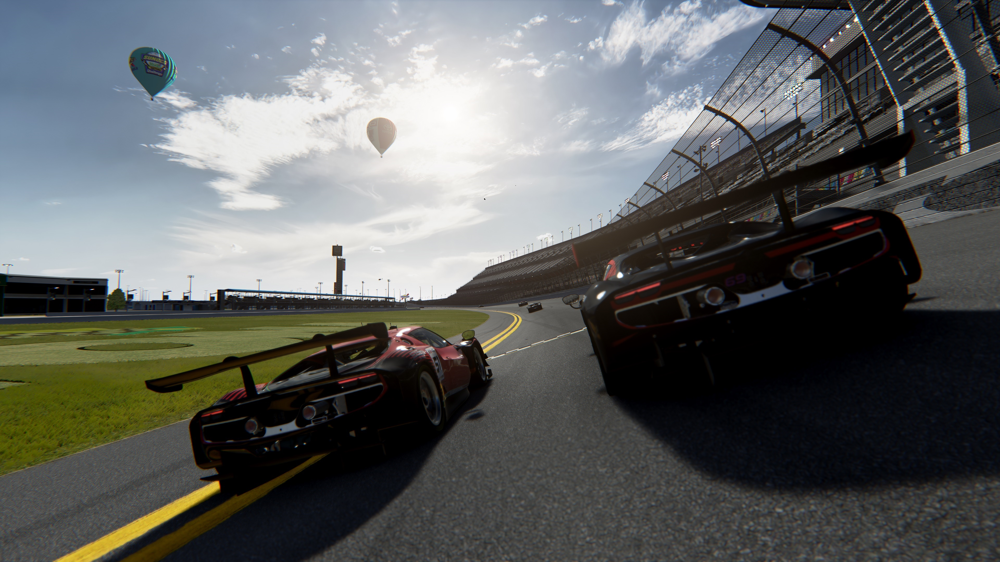
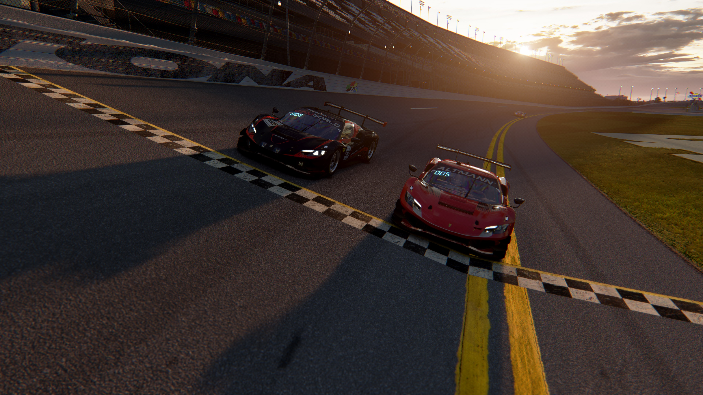
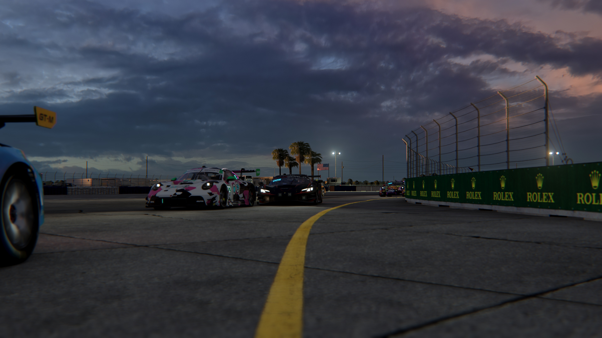
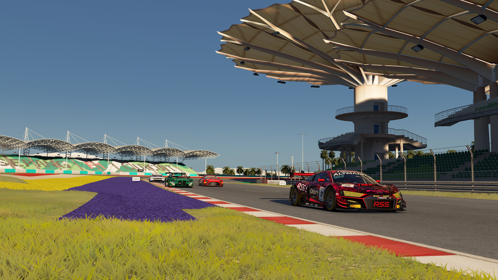
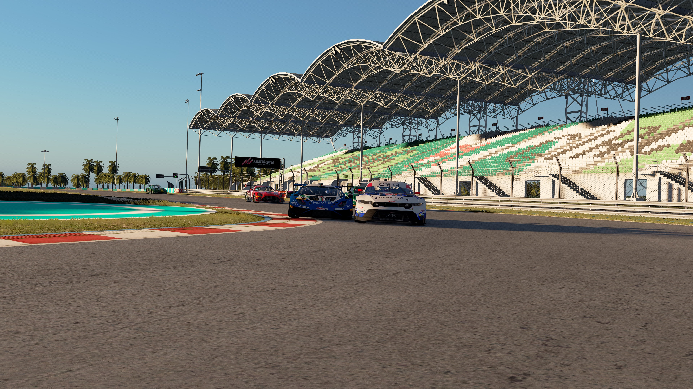
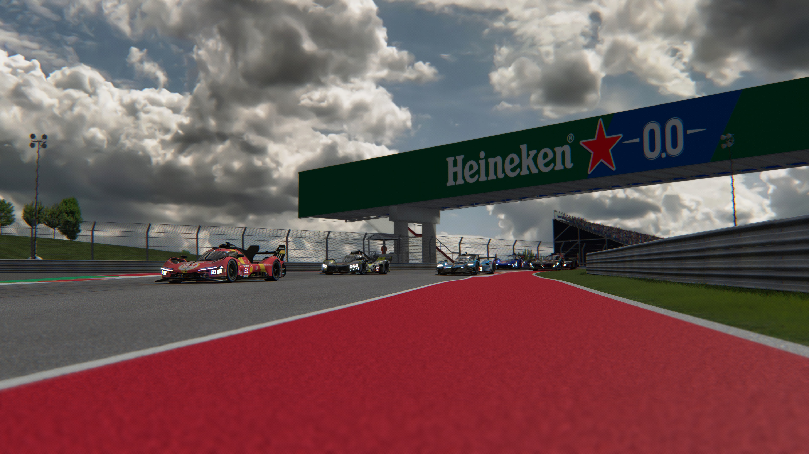

Wheel and Wheelbase
The wheel controls steering. Force feedback can communicate information about the virtual car through resistance and movement.
04 / SETUP GUIDE
You do not need the most expensive equipment to enjoy sim racing. The right setup depends on budget, space and personal goals.
A beginner setup only needs a suitable computer or console, a display and reliable controls.
A stable wheel and pedal position usually matters more than buying every expensive upgrade immediately.

The wheel controls steering. Force feedback can communicate information about the virtual car through resistance and movement.
Consistent throttle and braking are essential. Reliable pedals can be more useful for learning than simply increasing wheel strength.
A stable position prevents the wheel, pedals and chair from moving while driving.
The platform determines which simulators and hardware are available. PC generally offers more flexibility.
| Option | Advantages | Disadvantages | Best For |
|---|---|---|---|
| Single Monitor | Simple, affordable and easy to set up. | Limited peripheral vision. | Beginners and small spaces. |
| Triple Monitors | Wide field of view and strong peripheral vision. | Needs more space, GPU performance and setup time. | Dedicated racing setups. |
| VR | Strong immersion and natural head movement. | Can be uncomfortable and requires suitable hardware. | Drivers who value immersion. |
| Projector | Can provide a very large image. | Needs space and careful positioning. | Large custom installations. |
Different simulators are designed for different users. There is no single best choice for every driver.
Structured Online Competition
iRacing is useful for drivers who want scheduled online racing, structured competition and a progression system.
Competitive multiplayer, organized events and drivers who prefer clear online structure.
It uses a subscription model and additional content can require separate purchases.
Flexible Simulation
Assetto Corsa provides simulation-focused driving with many possibilities for different cars, circuits and community content.
Solo practice, experimentation, community content and more casual multiplayer.
Multiplayer quality can vary between different servers and communities.
Practise alone first. Know the basic braking points and track layout.
Complete several clean laps without repeatedly crashing or leaving the circuit.
Other drivers cannot predict sudden or aggressive movements. Leave more safety margin than during solo practice.
Avoid unnecessary contact. A clean race is more useful than forcing every possible move.
Different communities may have different rules and expectations.
IMAGE GALLERY
Examples captured by the website author. Move the mouse over each image.





Screenshots captured by the website author.